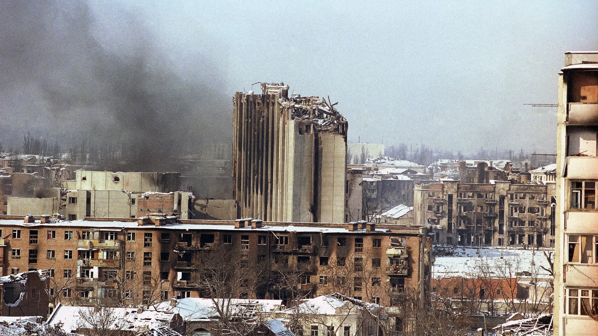

Capital City
Grozny
1994–1995 & 1999–2000
Capital of the Chechen Republic and the epicenter of the most intense urban combat in both wars. Besieged and largely destroyed twice, Grozny became a symbol of Chechen resistance and Russian military devastation.